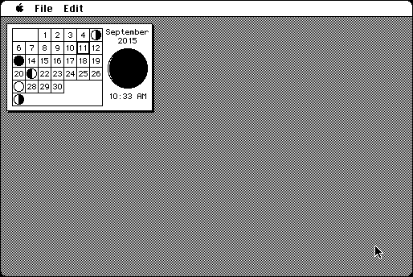

Download
wiedermoon.zip (16K) Wiedermoon 1.1 repackaged into a zipped hfs disk image and checksum file. The disk image can be mounted with Mini vMac.
wiedermoon.hqx (20K) Wiedermoon 1.1 in the original format.
copyright: Phil C. Stuart
mod date: Apr 6, 1996
license: Freeware
official url :
Phil Stuart's Freeware Macintosh Applications
"Shows the phases of the moon on a small calender."

If you find these downloads useful, please consider helping the Gryphel Project, which hosts them.
Here are the md5 checksums for the downloads, signed with Gryphel Key 5:
--------- GRY SIGNED TEXT --------- 3604e65356b378d9a38dbad0ad61a74c wiedermoon.zip ccd0060f72884acc3bec0d85807d202c wiedermoon.hqx ------- BEGIN GRY SIGNATURE ------- Gry/4Xa8CFcUzxdN/DD0akSHOtfJLKeJloWrEKFHHDqvCE2Q4djO5C7ovrSjMOPG epqSSh4am0saRnW0VU6lWMBS24r8IQK2ck2wv4/O8mSzimajBrjmJ/i/6BY0Cw4h 7H6jdz9KRI2EVrsYtXNfwXunwbMdWA2SKYSOQWTORxS3zaMAlWb5CkKTv9974rGQ -------- END GRY SIGNATURE --------